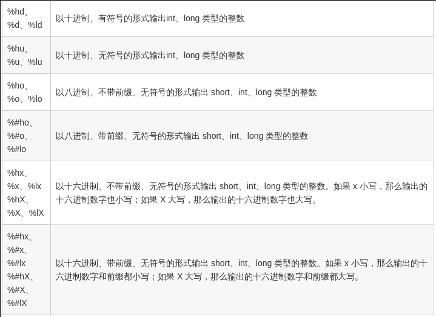

一大部分摘自码农有道
整型
进制表示
输入
1
2
3
4
5
6//二进制使用‘0b’或者‘0B’
int b_num = 0b101;
//八进制使用‘0‘
int b_num = 0706;
//十六进制使用‘0x‘或’0X‘
int b_num = 0xabc;输出

常用库函数
- 以下库函数包含在
stdlib.h中1
2
3
4int atoi(const char +nptr); //将字符串转化为int整数
long atol(const char *nptr); // 把字符串nptr转换为long整数
int abs(const int j); // 求int整数的绝对值
long labs(const long int j); // 求long整数的绝对值
生成随机数
1 | void srand(unsigned int seed); //随机数生成器的初始化函数 |
srand函数初始化随机数发生器（俗称种子），在实际开发中，我们可以用时间作为参数，只要每次播种的时间不同，那么生成的种子就不同，最终的随机数也就不同，通常我们采用<time.h>头文件中的time函数即可得到一个精确到秒的时间作为种子。rand函数会随机生成一个位于0 ~ RAND_MAX之间的整数。而对RAND_MAX是<stdlib.h>头文件中的一个宏，它用来指明rand所能返回的随机数的最大值
- 示例
1
2
3
4
5
6
7
8
9
10
11
12
int main()
{
srand(time(0));
for(char i=0; i<5; i++)
{
printf("%d\n", rand());
}
}
运行结果
- 生成一定范围的随机数
1
2int a = rand() % 50; // 产生0~49
int a = rand() % 51 + 100; // 产生100~150的随机数
字符
- 常用的库函数
1
2
3
4
5
6
7
8
9
int isalpha(int ch); //若ch是字母（'A'-'Z','a'-'z'）返回非0值，否则返回0。
int isalnum(int ch); //若ch是字母（'A'-'Z','a'-'z'）或数字（'0'-'9'），返回非0值,否则返回0。
int isdigit(int ch); //若ch是数字（'0'-'9'）返回非0值，否则返回0。
int islower(int ch); //若ch是小写字母（'a'-'z'）返回非0值，否则返回0。
int isupper(int ch); //若ch是大写字母（'A'-'Z'）返回非0值，否则返回0。
int tolower(int ch); //若ch是大写字母（'A'-'Z'）返回相应的小写字母（'a'-'z'）。
int toupper(int ch); //若ch是小写字母（'a'-'z'）返回相应的大写字母（'A'-'Z'）
浮点型
1 |
|
运行结果
1 | num1=111.099998 |
- 可见
float数据类型表达的是一个近似的数，不是准确的，小数点后的n位有误差，浮点数的位数越大，误差越大
double数据类型表达的也是一个近似的数，不是准确的，小数点后的n位有误差，浮点数的位数越大，误差越大
float不可以用来比较是否相等，double可以
常用库函数
1 | double atof(const char *nptr); // 把字符串nptr转换为double |
字符串
常用库函数
- 获取字符串的长度（strlen）
1
size_t strlen( const char* str);
功能：计算字符串长度，不包含\0
返回值：返回字符串的字符数
strlen 函数计算的是字符串的实际长度，遇到第一个\0结束。
函数返回值一定是size_t，是无符号的整数，即typedef unsigned int size_t。
如果你只定义字符串没有初始化，结果是不定的，它会从首地址一直找下去，直到遇到\0停止。
还有一个注意事项，sizeof返回的是变量所占的内存数，不是实际内容的长度。
1 | char buf[10] = "abc"; |
- 字符串复制或赋值（strcpy）
1
char *strcpy(char* dest, const char* src);
功 能: 将参数src字符串拷贝至参数dest所指的地址。
返回值: 返回参数dest的字符串起始地址。
复制完字符串后，在dest后追加0。
如果参数dest所指的内存空间不够大，可能会造成缓冲溢出的错误情况。
- 字符串复制或赋值（strncpy）
1
char * strncpy(char* dest,const char* src, const size_t n);
功能：把src前n字符的内容复制到dest中
返回值：dest字符串起始地址。
如果src字符串长度小于n，则拷贝完字符串后，在dest后追加0，直到n个。
如果src的长度大于等于n，就截取src的前n个字符，不会在dest后追加0；
dest必须有足够的空间放置n个字符，否则可能会造成缓冲溢出的错误情况。
- 字符串拼接（strcat）
1
char *strcat(char* dest,const char* src);
功能：将src字符串拼接到dest所指的字符串尾部。
返回值：返回dest字符串起始地址。
dest最后原有的结尾字符\0会被覆盖掉，并在连接后的字符串的尾部再增加一个\0。
dest要有足够的空间来容纳要拼接的字符串，否则可能会造成缓冲溢出的错误情况。
- 字符串拼接（strncat）
1
char *strncat (char* dest,const char* src, const size_t n);
功能：将src字符串的前n个字符拼接到dest所指的字符串尾部。
返回值：返回dest字符串的起始地址。
如果n大于等于字符串src的长度，那么将src全部追加到dest的尾部，如果n大于字符串src的长度，只追加src的前n个字符。
strncat会将dest字符串最后的\0覆盖掉，字符追加完成后，再追加\0。
dest要有足够的空间来容纳要拼接的字符串，否则可能会造成缓冲溢出的错误情况。
- 字符串比较（strcmp、strncmp）
1
int strcmp(const char *str1, const char *str2 );
功能：比较str1和str2的大小;返回值：相等返回0，str1大于str2返回1，str1小于str2返回-1；
int strncmp(const char *str1,const char *str2 ,const size_t n);
功能：比较str1和str2的大小;返回值：相等返回0，str1大于str2返回1，str1小于str2返回-1；
两个字符串比较的方法是比较字符的ASCII码的大小，从两个字符串的第一个字符开始，如果分不出大小，就比较第二个字符，如果全部的字符都分不出大小，就返回0，表示两个字符串相等。
在实际开发中，程序员一般只关心字符串是否相等，不关心哪个字符串更大或更小。
- 字符查找（strchr、strrchr）
1
char *strchr(const char *s,const int c);
返回一个指向在字符串s中第一个出现c的位置，如果找不到，返回0。
1 | char *strrchr(const char *s,const int c); |
返回一个指向在字符串s中最后一个出现c的位置，如果找不到，返回0。
- 字符串查找（strstr）
1
char *strstr(const char* str,const char* substr);
功能：检索子串在字符串中首次出现的位置。
返回值：返回字符串str中第一次出现子串substr的地址；如果没有检索到子串，则返回0。